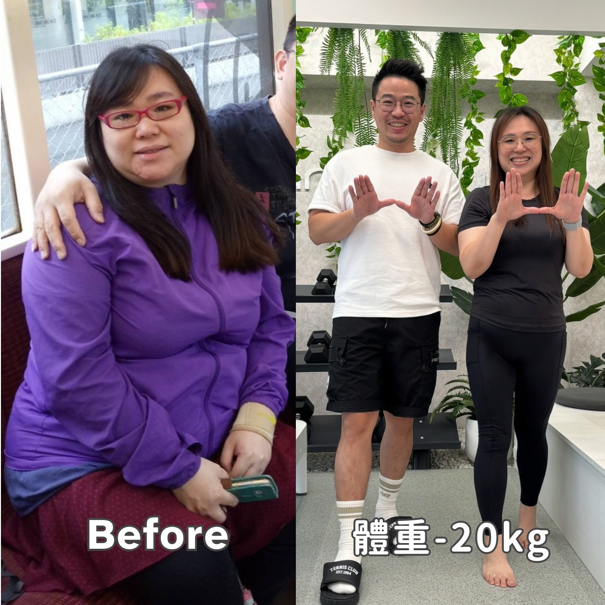

有些尷尬，會讓你永遠記得
19歲的她穿著外婆買的連身裙上公車，卻被誤認為孕婦...

那個被稱為「不會死的癌症」的病
慧敏不只是胖，她還患有類風濕性關節炎。每天早上醒來，她都不知道今天會是哪個關節發炎、疼痛到無法彎曲。
有時候手指腫得像炸過的甜不辣，一碰就痛，什麼事都不能做。我會先哭一哭，等情緒宣洩完，才慢慢起身開始一天。
她曾經錄下自己彈琴的影片，因為很怕關節哪一天就無法彎曲，再也無法彈琴了。
46
年來的痛苦掙扎
20
公斤的成功減重
24
年婚姻的真愛見證
當絕望遇見希望
46年來，她試過無數減肥方法：馬偕醫院減重班、媚登峰、賀寶芙代餐、雞尾酒療法、中醫埋線、安麗代餐⋯⋯
我就像希臘神話裡的薛西佛斯，每天費力地把巨石推上山，但石頭總是會滾回原處，永遠看不到盡頭。
就在她幾乎要放棄的時候，她選擇了ABC瘦身法。
身體會告訴你答案
最神奇的是，困擾她多年的關節炎，竟然開始改善。
2024年冬天，我發現我都還沒有跟老公訴苦過，關節炎也沒怎麼發作。到了2025年初，我在醫生同意下開始減藥，甚至可以停下口服藥物！
瘦是健康的附加價值，慧敏的經歷就是最好的證明。
老公從來沒看過瘦的她
19歲認識老公的時候，她就是胖胖的。24年來，老公從來沒看過瘦的她。
他從來沒有因為我胖就嫌棄我，從沒催促我改變。但也正因為如此，我更想變得更好。我想和他一起慢慢老去，而不是因為健康問題成為他的負擔。
現在的她，瘦了20公斤，是她人生中最瘦的時候。老公也終於看到了瘦的她。
重獲新生的她
光是願意為自己努力，就已經贏過90%的人了。對一個從小就因為胖而沒自信，甚至媽媽說因為胖就不要愛我的人來說，你們改寫了我的人生。
現在的她，早上醒來不再恐懼。她知道今天的關節不會痛，她可以自由地活動，可以擁抱她愛的人。
她不再需要穿孕婦裝，也不會再被誤認為孕婦。她可以抬頭挺胸，自信地做自己。